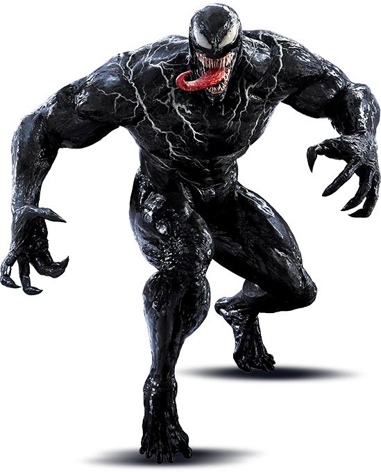

-
HOMEM-FORMIGA


As partículas Pym permitem a ele alterar seu tamanho e ter força sobre-humana, e seu capacete permite controlar e se comunicar com insetos, principalmente as formigas.
-
DEADPOOL


Deadpool, cujo nome verdadeiro é Wade Winston Wilson, é um mercenário anti-heroi canadense marcado por ser falastrão, violento e principalmente comediante.
-
HOMEM DE FERRO


O principal e mais famoso poder do Homem de Ferro (Tony Stark) são os seus famosos repulsores que se encontram nas palmas de suas mãos, que além de auxiliarem o voo, também dispara poderosas rajadas de energia, abastecidas pelo Reator Arc.
-
HOMEM-ARANHA


O Homem-Aranha (Spider-Man), o alter ego de Peter Parker, é um super-herói. Seus poderes são geração de teia, escalar paredes, agilidade, vigor aumentado, sentido aranha, velocidade Sobre Humana e força.
-
THOR


Thor é o deus nórdico, dos trovões e das batalhas. Pertence ao clã dos deuses Æsir, e é filho do deus Odin. Thor usa como arma o martelo Mjolnir, e tem o cinto Megingjord, que lhe dobra a força.
-
VENOM

Venom é um simbionte alienígena que forma-se a partir de um líquido, material orgânico de espessura. Comumente, seu hóspede é Eddie Brock, um jornalista do mesmo universo de Homem-Aranha.